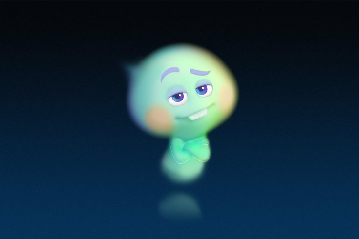

22
22는 지구로 가는 것에 비관적인 영혼으로, 지구에 가고싶어 하지도 않으며,
불꽃을 찾을 의지도 없는 영혼이다.
그를 거쳐간 멘토만 손으로 셀 수 없을 만큼 많다.
이번에 조금 다른 것은, 가드너는 22를 지구로 보내는 것에 관심이 없다는 것.
오히려 자신이 지구로 가고싶어하는 가드너는
자신이 지구로 가는 티켓을 갖고,
22는 불꽃을 찾아야 하는 의무에서 자유로워지는 조건으로
서로 협력하기로 한다.
그 과정에서 둘은 가드너가 원래의 영혼으로 돌아갈 방법을 찾다가
둘이 함께 지구로 떨어지고
22가 가드너의 몸으로, 가드너는 고양이의 몸으로 들어가는 사고가 일어난다.